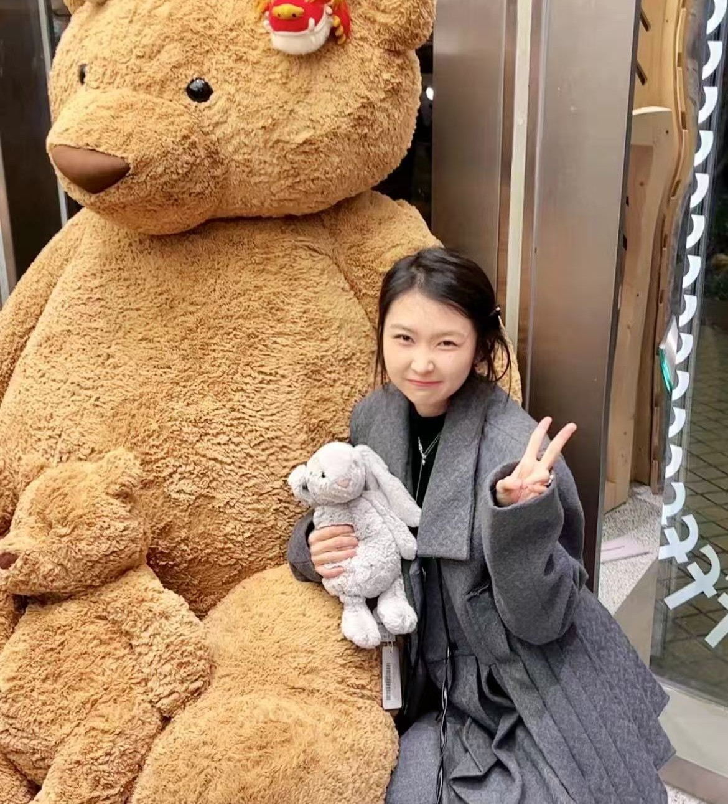
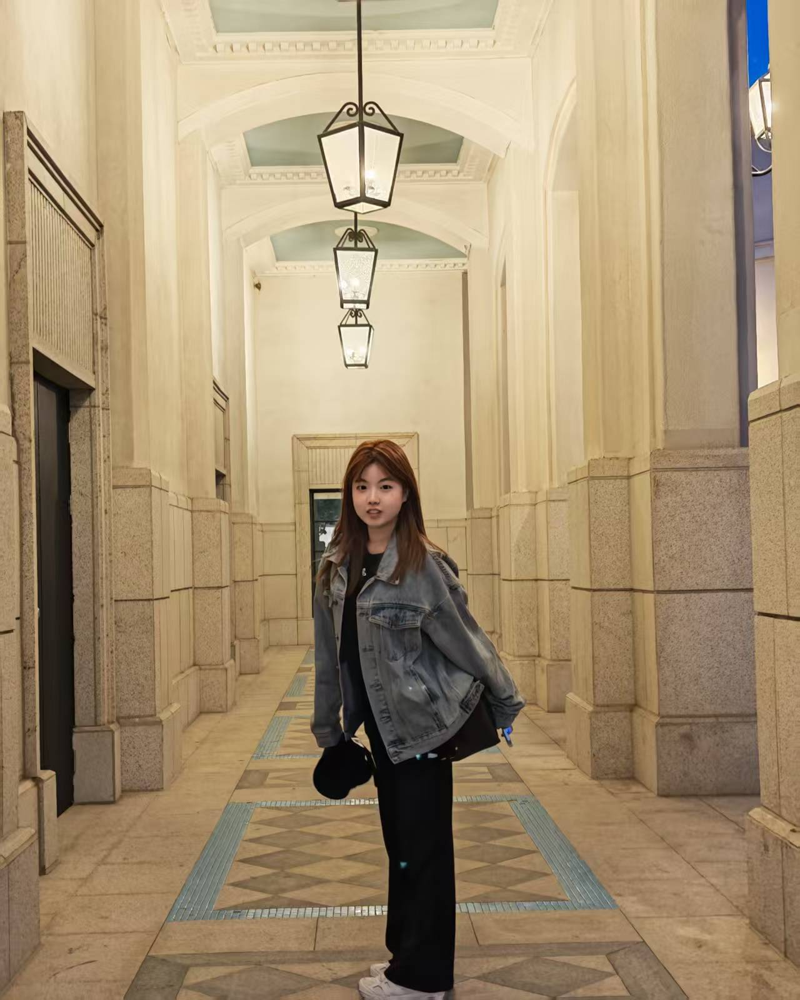
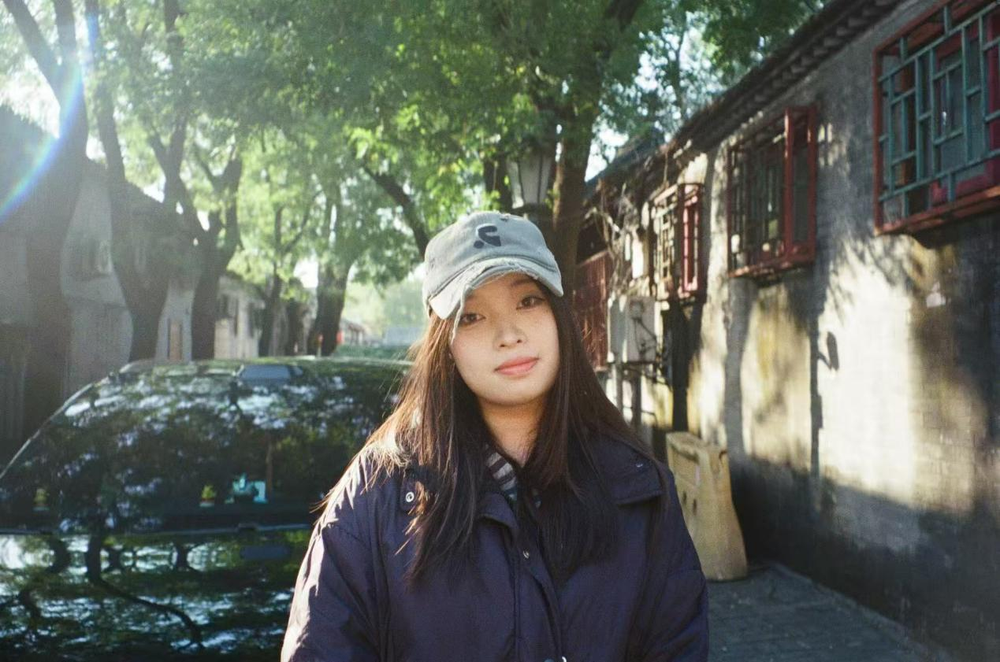
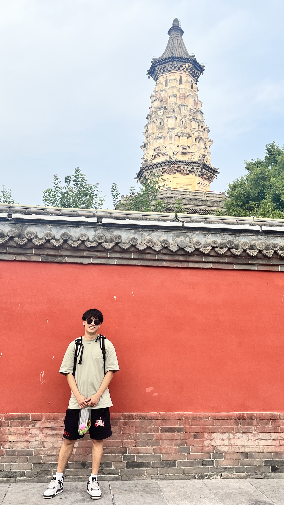

↗
↗DADLab
研究团队
负责人
↗在研组员 Current Members

↗徐小雯
个人资料 ↗ ↗
↗熊海遥
个人资料 ↗
↗姜雨
个人资料 ↗↗
武文政
个人资料 ↗ ↗
↗樊跃龙
个人资料 ↗ ↗
↗李学瑞
个人资料 ↗ ↗
↗王彬
个人资料 ↗↗
董晓晴
2026 级硕士研究生
个人资料 ↗
↗赵文菲
2026 级硕士研究生
个人资料 ↗ ↗
↗刘丽曼
2026 级硕士研究生
个人资料 ↗ ↗
↗王成宇
2026 级硕士研究生
个人资料 ↗
↗朱瑜
2026 级硕士研究生
个人资料 ↗ ↗
↗沈静怡
2026 级硕士研究生
个人资料 ↗01 / 13
拖动探索 / DRAG TO EXPLORE